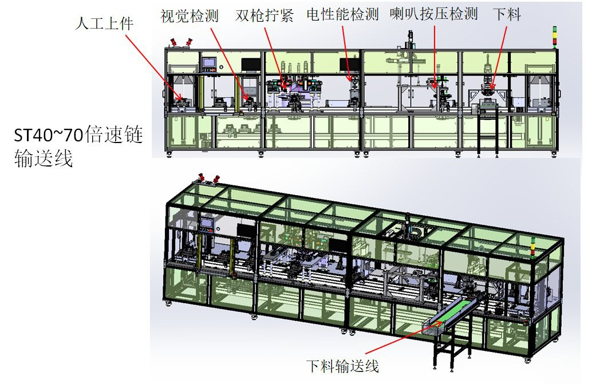
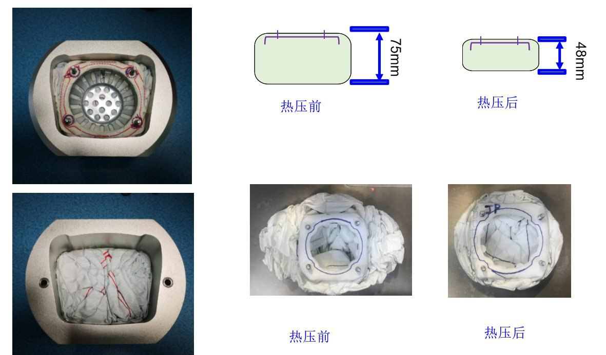
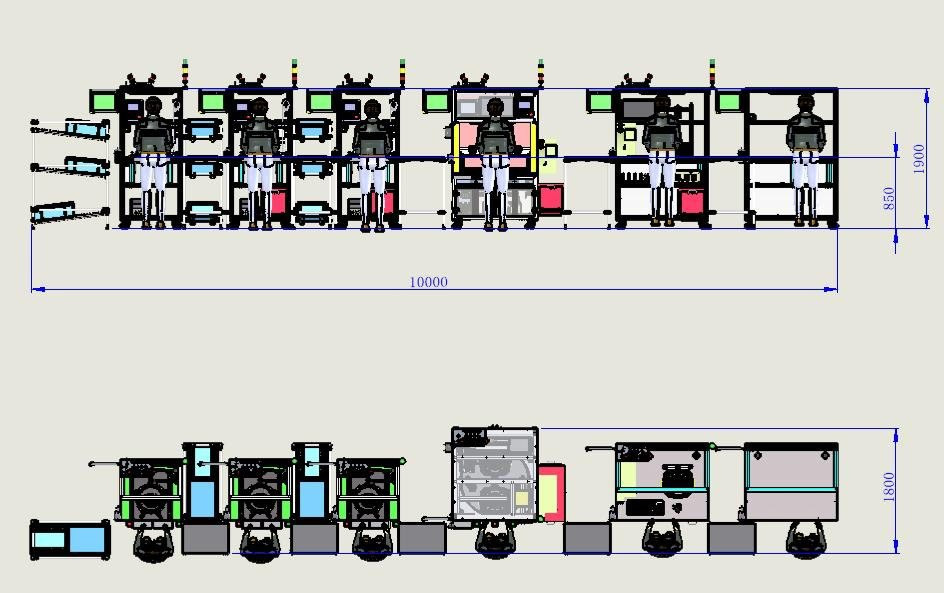

汽车安全件非标自动化
产线、试验机与工装夹具
全面覆盖汽车被动安全核心零部件的装配产线、专机、工装夹具与国标试验设备开发制造：
- 安全气囊产线：DAB / PAB / SAB / CAB / KAB 自动生产线（含自动叠袋机、三工位热成型、饰盖热熔焊）
- 安全带产线：普通（含限力）R200.2、预紧限力 R200RP 卷收器线、锁扣倍速链产线、钢丝绳压铆转盘机
- 方向盘与试验机：SW 方向盘装配线（ST10~ST60）、G 值试验机、三工位卷收器/锁扣疲劳及倾斜锁止试验机
3D 视觉和工业机器人的
智能化解决方案
把机器视觉与工业机器人深度集成到汽车安全件产线中，实现高精度引导、在线缺陷识别与自动分拣。
- 视觉引导机器人自动执行安全气囊电性能检测与精密上下料
- 导向环镶片振动盘上料 + 高速视觉自动分选及气缸 NG 剔除
- 钢丝绳压铆尺寸/到位视觉检测、气囊饰盖热熔焊接质量影像检测

工厂设备、设施、
工艺过程改善与效率提升
依托核心团队在 Autoliv 及国内被动安全工厂积累的精益制造与 TS16949 经验，直击产线瓶颈进行定向改造。
- 多工位并行提效（如三工位气袋热成型、四工位转盘压铆与绕簧一体机）
- 关键人工工序自动化替代（带头/织带结自动翻折缝纫、自动拔线束）
- 既有产线防错逻辑加固、测控曲线存盘与 MES 追溯联网升级
已交付项目的核心工艺与检测指标
所有工艺参数均来自南京崴肯真实交付设备与上位机实测记录。
柔性混线与三重防错
实现工序防错、工装防错、传感器防错，同一条线兼容 D/P/S/C/K 气囊柔性生产，自动打印总成码与包装箱码。
三工位热成型 & 0.1mm 伺服热熔
气袋热压由 75mm 精准压缩至 48mm 并自动冷却下料；饰盖图标焊接机伺服行程精度达 0.1mm，支持分段与配方控制。
车带感角度与异响在线一体检
车感 0.45g 锁止≤50mm、带感 0.8g 不锁/2.0g 锁止≤50mm、角度 12°/27° 四向检测与噪音监测，整机节拍仅 13–15s。
压力-位移监控与 100% 预拉伸
四工位转盘钢丝绳压铆，实时绘制并存储压力-位移监控曲线，集成在线 100% 预拉伸测试与视觉 OK/NG 自动分拣。
国标与主机厂耐久试验系统
满足国标 GB14166-2013 与奇瑞 QSQR S7-5-2023 试验标准，覆盖 G 值试验、三工位卷收器/锁扣疲劳及倾斜锁止试验。
方向盘装配线过程数据追溯
10 米全长 ST10~ST60 流水作业（卡簧/按键/下护罩装配、按键电检、总检包装），拧紧力矩与电性能全程绑定条码。
四大专业设备板块

安全气囊产线与专机
DAB / PAB / SAB / CAB / KAB 柔性装配线、自动叠袋机、三工位热成型与饰盖热熔焊接机

安全带产线与专机
R200.2/R200RP 卷收器、锁扣倍速链、钢丝绳压铆转盘、绕簧一体机、自动翻折缝纫与视觉分选

安全带试验设备
G 值试验机、三工位卷收器疲劳试验机、倾斜锁止试验机（GB14166）、三工位锁扣疲劳试验机

方向盘装配生产线
SW 方向盘装配线（ST10~ST60），集成力矩/电性能存盘、防错互锁与条码追溯
需要定制安全气囊、安全带
或方向盘非标设备？
把工件图纸、节拍与测试标准发给我们，技术总监与工程团队快速响应。
138 5153 2506